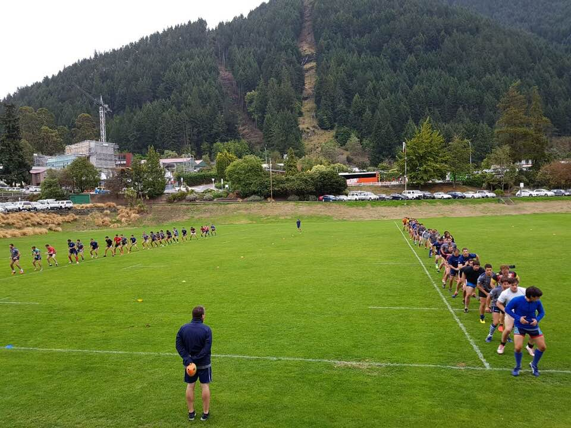

Hola, me llamo Martín Jauma. Como entrenador de rugby, mi estilo de coaching es el del tipo facilitador y es el que me dio el mejor resultado. Mis habilidades incluyen, organizado, metódico planificador, resolutivo, open minded, apasionado por el juego, trabajo y constructor de equipo, uso la tecnología como herramienta en el desarrollo para un rugby competitivo..
Tour New Zealand 2018
Head Coach 1ra Torneo Regional del Litoral
Como Asistente de Coach en las áreas de Scrum, Lineout, Reinicio y Defensa, me dedico a capacitar a jugadores y entrenadores del club en el proceso de desarrollo para las categorías mayores y juveniles (M15 a M19). Mi labor incluye diagnosticar, planificar y analizar partidos y entrenamientos semanales, con el objetivo de establecer metas de desarrollo medibles a corto, mediano y largo plazo.
Mi tarea es capacitar a los entrenadores del club en el proceso de desarrollo para las categorías juveniles M15 a M19, diagnosticando, planificando y analizando los partidos y entrenamientos de todas las semanas. Para desarrollar objetivos de desarrollos medibles a corto, mediano y largo plazo
En este rol tenia el desafío de crear junto a los entrenadores y jugadores del propio club una forma de jugar que de valor de pertenencia para el club, capacitándolos en un método de trabajo, planificando, organizando para el desarrollo de todas las estructuras para la práctica de un rugby competitivo. El año 2016 se obtuvo un doble ascenso llegando a la 2da categoría del rugby de Buenos Aires, al proximo año se hizo la mejor campaña de la historia del club clasificando en el puesto18 de todos los equipos federados de U.R.B.A
El propósito en este trabajo era capacitar a los entrenadores del club a entender un ¿qué?, ¿Para qué? y ¿cómo? entrenar. Pucará es uno de los clubes más importantes del país. Club formador mucha cantidad de jugadores para los distintos seleccionados Argentinos. En el año 2019 también estuve asesorando técnicamente y dando el soporte de analista de video para los 3 primeros equipos senior del club.
Como Analista del seleccionado de rugby, integro mis habilidades en análisis de video, ciencia de datos y desarrollo web para optimizar el rendimiento del equipo. Realizo un análisis detallado de partidos y entrenamientos, extrayendo datos clave que utilizo para crear visualizaciones y reportes personalizados. Desarrollo herramientas web a medida para facilitar el acceso a estadísticas y mejorar la toma de decisiones. Mi enfoque combina tecnología avanzada y conocimiento del deporte para apoyar al equipo en la preparación estratégica y táctica.
Proyecto para la competencia de Franquicias Americanas SLAR y Super Rugby Americas. En estos proyectos como jefe del minsmo mi principal tarea fue y es la toma de requerimientos de distintos actores del rugby de alta performance: entrenadores, preparadores físicos, médicos, referís y otros especialistas; diseñar una solución a medida de visualización de datos; definir y crear la estructura y el formato de datos utilizados. Damos los servicios de HIA, TMO, CITING, para el campeonato de Franquicias SUPER RUGBY AMERICAS.
Sudamérica XV es un equipo de rugby integrado por jugadores sudamericanos gestionado por Sudamérica Rugby. Originalmente se conformó para disputar partidos amistosos frente a la selección de Sudáfrica y clubes de ese país. Tiempo después ha vuelto a conformarse para enfrentar a distintos equipos sudamericanos.
El comienzo de Sudamérica XV